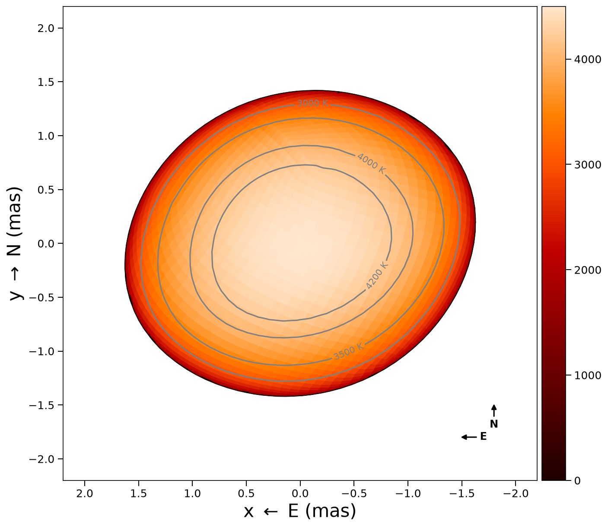
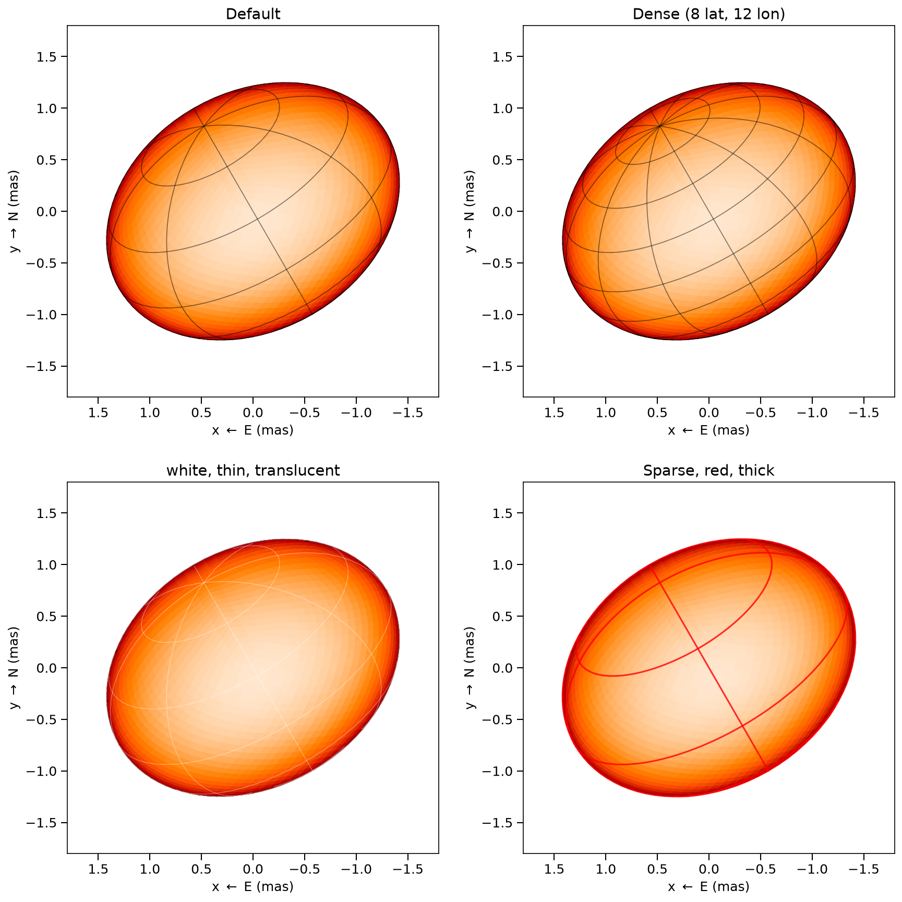
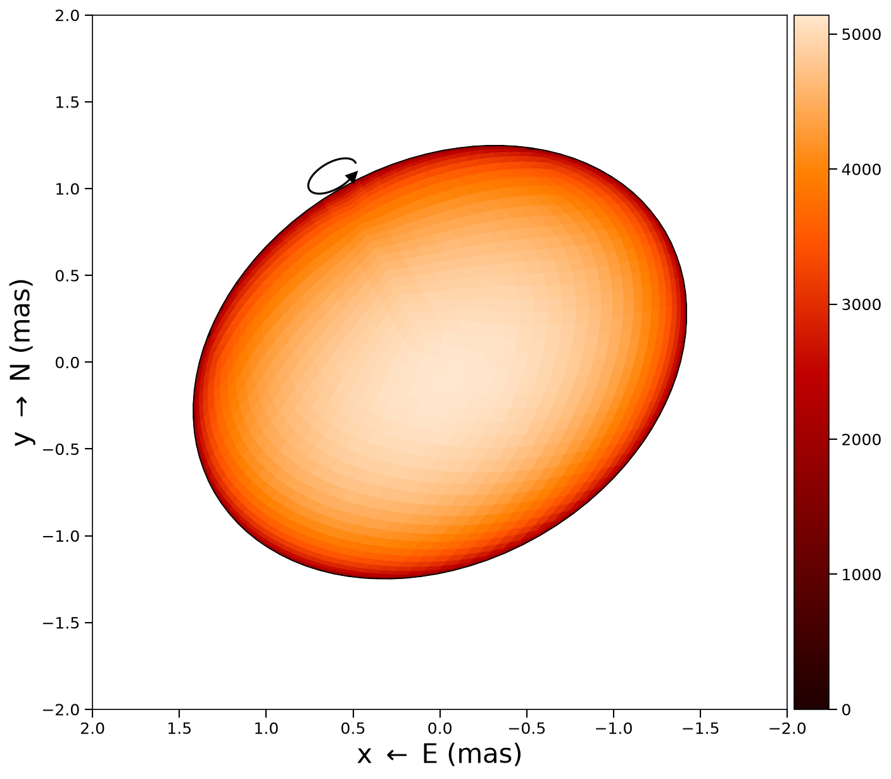
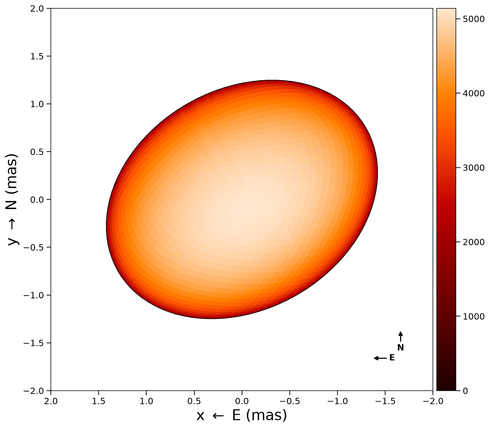
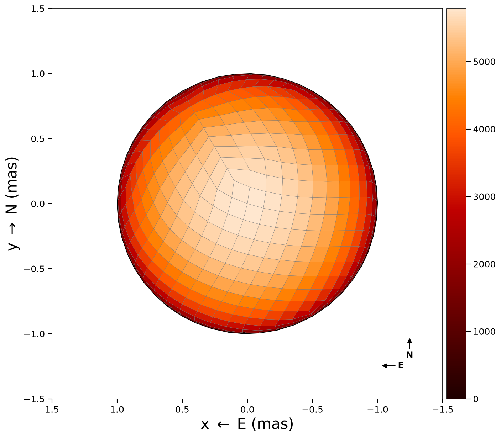
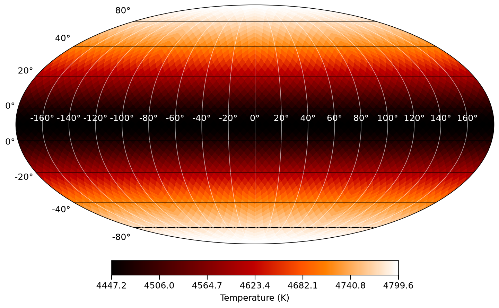

Plotting
The functions on this page draw with matplotlib and need using PythonPlot. Makie versions (plot2d_makie, plot3d_makie, plot_mollweide_makie) need using CairoMakie or GLMakie.
2D projection
The temperature map as seen by the observer at one epoch:
plot2d(tmap, stars[1])Keywords, with their defaults:
plot2d(tmap, stars[1];
intensity = false, # plot intensity (temperature × limb darkening)
plotmesh = false, # pixel edges
colormap = "gist_heat",
figtitle = "",
flipx = false, # flip East-West
background = "white", # or "black"
vmin = nothing,
vmax = nothing,
compass = true, # N/E arrows
graticules = false, # lat/lon lines on the surface
rotation_axis = false, # dashed line through the poles
rotation_arrow = false, # spin-direction arrow at the north pole
star_params = nothing, # exact surface for the graticules
graticule_kwargs = (;), # graticule style (below)
)The axes are the sky plane in milliarcseconds, East left, North up. Only pixels with positive visibility weight are drawn.
Temperature contours
Contour lines at the given temperatures:
plot2d(tmap, stars[1];
contours = [3000, 3500, 4000, 4200], # temperature levels (K)
contour_color = "gray", # line and label color (default "gray")
contour_labels = true, # label each contour with "XXXX K" (default true)
contour_fontsize = 10, # label font size (default 10)
)
Graticules
graticules = true draws latitude/longitude lines on the surface. With star_params they follow the exact surface:
- Sphere (type 0):
radius - Triaxial ellipsoid (type 1):
radius_x,radius_y,radius_z - Rapid rotator (type 2):
rpoleandfrac_escapevel; meridians follow the Roche profile (f_rapid_rot)
Otherwise they use an oblate spheroid fitted to the mesh vertices.
Style, through graticule_kwargs:
plot2d(tmap, star;
graticules = true,
star_params = star_params,
graticule_kwargs = (
nlat = 8, # number of latitude circles (default 5)
nlon = 12, # number of longitude lines (default 8)
color = "white", # line color (default "black")
linewidth = 0.6, # line width (default 0.8)
alpha = 0.4, # opacity (default 0.5)
),
)The rotation angle is 360 · star.t / star_params.rotation_period, so the graticules turn with the surface.

Decorations
- Limb (
limb = true, default): outline of the projected disc (limb_color,limb_linewidth). It keeps a pale surface visible on a white background. - Pole line (
rotation_axis = true): dashed line through the projected rotation axis, with an arrow at the north pole. - Spin arrow (
rotation_arrow = true): curved arrow beyond the north pole showing the sense of rotation, reversed whenrotation_period < 0. The near-side arc is solid, the far side dashed. - Compass (
compass = true, default): E/N arrows in the lower-right corner, East left.
plot2d(tmap, star;
rotation_axis = true,
rotation_arrow = true,
compass = true,
limb = true, # outline the disc (default)
)The decorations take their orientation from the mesh. inclination and position_angle override it:
plot2d(tmap, star; rotation_axis = true,
inclination = 60.0, position_angle = 30.0) # degrees from LOS; N through EA component built by create_binary_geometry is oriented by the orbit's binary_frame, not by its own inclination / position_angle. Do not pass those to plot2d_binary.
| Pole line | Spin arrow | Compass | All three |
|---|---|---|---|
 |  |
Multi-epoch 2D
All epochs side by side, on one colour scale:
plot2d_allepochs(tmap, stars)plot2d_allepochs(tmap, stars;
plotmesh = false,
tepochs = tepochs, # epoch labels
colormap = "gist_heat",
ncols = 3, # columns; rows and figure size follow
compass = true,
)Without ncols, the layout is chosen from the number of epochs, up to four across. arr_box = 23 gives 2 rows × 3 columns.
Wireframe
The tessellation alone, without colour fill:
plot2d_wireframe(stars[1])By default the far side is drawn too, in a lighter colour:
plot2d_wireframe(stars[1];
hidden = true, # far side as well
front_color = "black", # near side
hidden_color = "lightgrey", # far side
linewidth = 0.5,
)hidden = false draws the near side only.

3D surface
The star as a 3-D surface coloured by temperature:
plot3d(tmap, stars[1])Mollweide projection
The whole surface in Mollweide (equal-area) projection:
plot_mollweide(tmap, stars[1])HEALPix and lon/lat meshes are both handled. Keywords:
plot_mollweide(tmap, stars[1];
visible_pixels = [], # pixels observed at some epoch
mask_unobserved = true, # grey out the others
bad_color = "lightgray", # their colour
vmin = 4000.0,
vmax = 5000.0,
colormap = "gist_heat",
incl = 78.0, # dash-dot line at latitude −incl (none at 90)
title = "Mollweide", # axes title
lon_color = "white", # meridians and their labels
lat_color = "black", # parallels and their labels
)The graticule (spacing, line style), degree labels, colourbar (label, tick count), and a solid equator and central meridian can each be turned off or restyled; see Controlling the furniture. title is the axes title. On a HEALPix mesh figtitle names only the figure window; on a lat/long mesh it is also the axes title.
With visible_pixels and mask_unobserved = true, pixels never observed are drawn in bad_color. sometimes_visible(stars) lists the pixels visible at some epoch:
vis = sometimes_visible(stars)
plot_mollweide(tmap, stars[1], visible_pixels=vis)Longitude runs from −180° to 180° and latitude from −90° to 90°. Meridians are every 20° (lon_spacing), parallels every 15° (lat_spacing).
